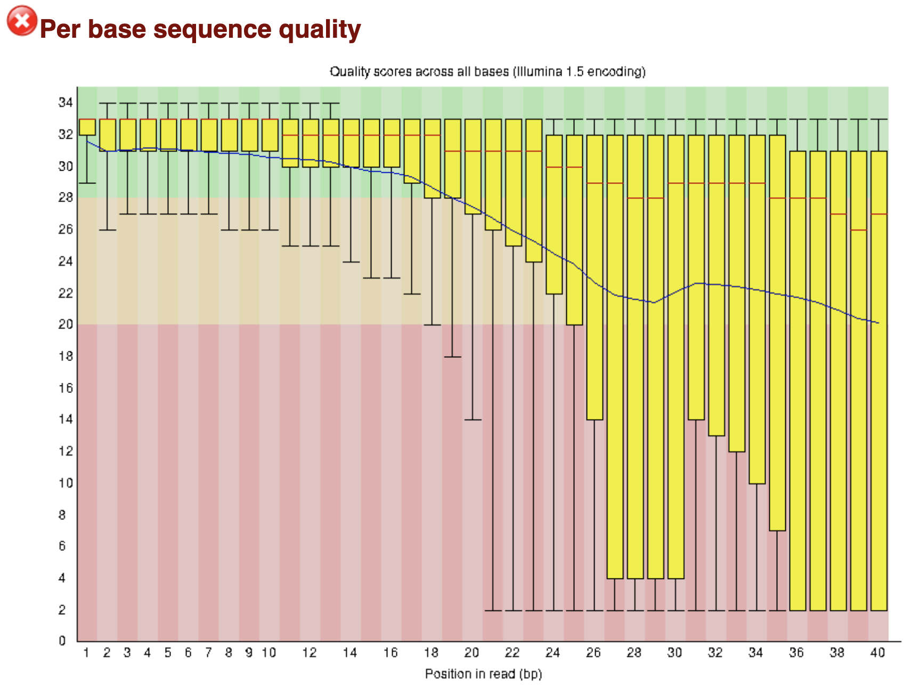
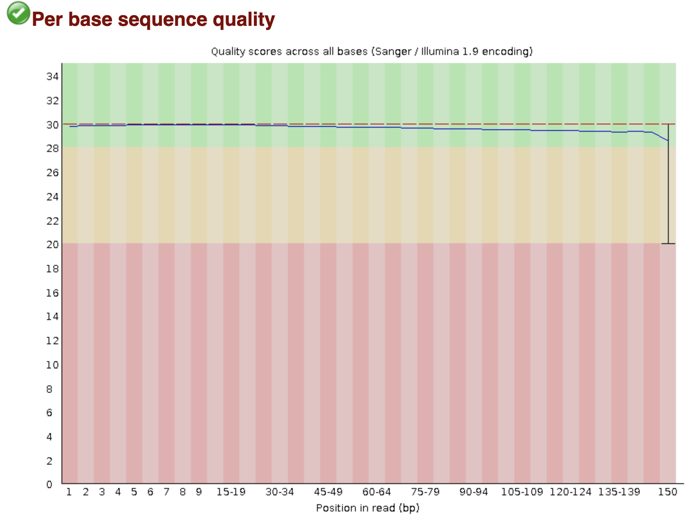
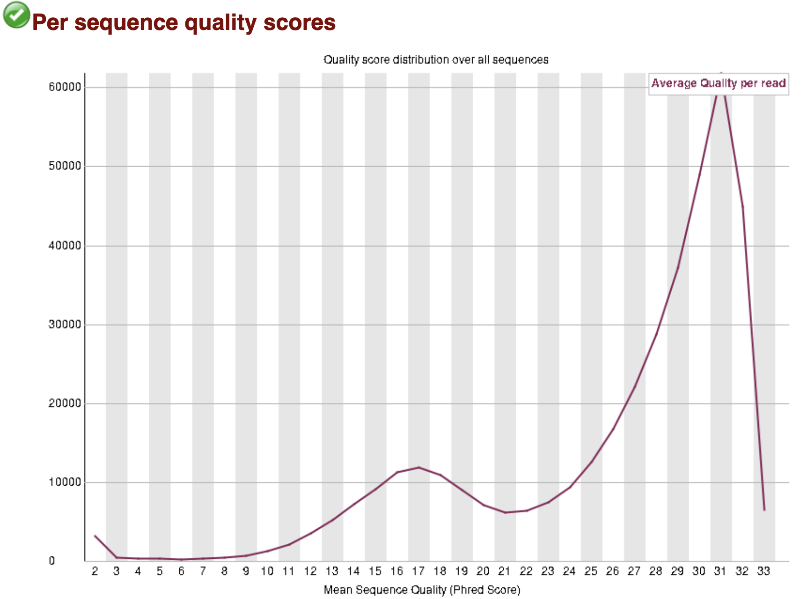
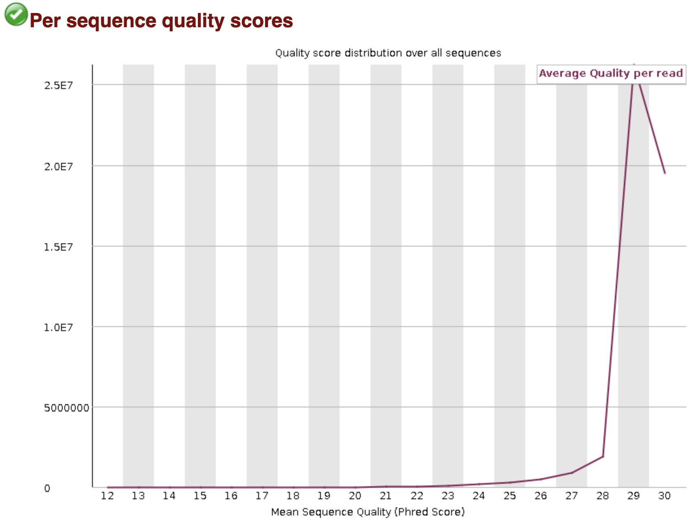
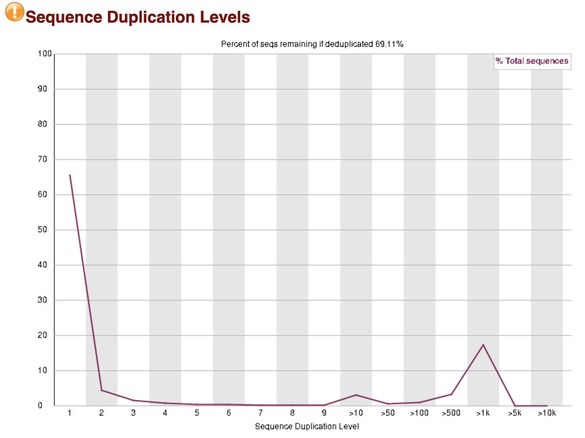
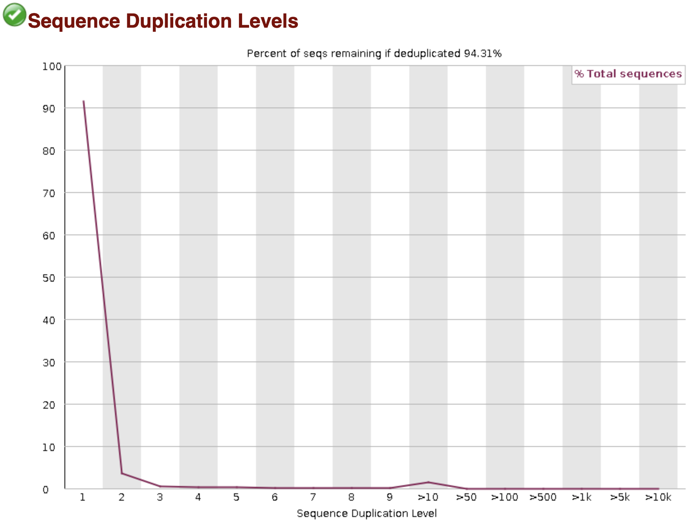

3 Project 1 - Variant calling and population genetics analysis
The project tutorial of Module 1 consists of two parts: first, we will learn how to identify variants using Illumina short-read data from two samples. We will start with basic quality controls for sequencing reads and then perform read alignments and variant genotypes in these samples. The second part of this tutorial will focus on the interpretation of the genetic variation using population-level data.
3.1 Part I: Short-read sequencing, quality control, and variant calling
In modern-day genomics, Illumina sequencing is the most commonly used short-read sequencing technology. Typically, the end product of sequencing is a FASTQ file - a text file that contains the sequence data from a DNA library, which typically is from a given sample. Two of the most common library protocols: the single-end and paired-end sequencing libraries.
Single-read sequencing involves sequencing DNA from only one end of a DNA fragment. Paired-end sequencing, on the other end, allows users to sequence both ends of a fragment, which enables more accurate read alignment and the ability to detect more complex variants, such as small and large insertion-deletion (indel) variants, which is more difficult with single-read data.
3.1.1 What does a FASTQ file look like?
For the single-end protocol, all read sequences are written to the corresponding sample’s R1 FASTQ file, and, for a paired-end run, a pair of sequences are written to the sample’s R1 adn R2 FASTQ files, respectively.
Here is an example of a pair of two reads:
Each entry in a FASTQ files consists of 4 lines:
- A sequence identifier with information about the sequencing run. The exact contents of this line vary by based on the basecalling software used.
- The sequence (the base calls; A, C, T, G and N).
- A separator, which is simply a plus (+) sign.
- The base call quality scores. These are Phred +33 encoded, using ASCII characters to represent the numerical quality scores.
3.1.2 What is a Phred quality score?
A Phred score is a common measurement for sequencing quality. It is defined as the probability of sequencing error (i.e. the base call is wrong):
\(Q=−10*log_{10} p\)
where Q is the Phred quality score and p is the probability of error (i.e. the base call is wrong).
## ErrorRate PhredScore Phred+33
## 1 0.100 10 +
## 2 0.010 20 5
## 3 0.001 30 ?3.1.3 Sequencing read quality control
It is important to understand the quality of raw reads before moving forward to any analysis. In this tutorial, we will use FastQC, a common software to produce summary statistics and visualization to assess the quality of our data. Despite that most modern sequencing technologies produce high-quality reads, it is often to observe low quality bases towards the 3’-end and some towards the 5’-end as well. In addition, ocassionally one could find residual adapter sequences in reads. To remove these potential artifacts, we will apply Trim Galore to FASTQ files.
# Login to the course directory on the MSI
ssh your_username@agate.msi.umn.edu
cd /PATH_to_GCD8141_DIR/benson/
# start an interactive session with 4 cores
srun -N 1 --ntasks-per-node=1 --cpus-per-task=4 --mem=10gb -t 3:0:0 --tmp=20g -p interactive --pty bash
# Activate the environment GCD8141_projects
source activate GCD8141_projects
# Create a new working directory for FastQC under the project1 directory
mkdir -p project1/myFASTQqc/pretrimmed
cd project1/myFASTQqc/pretrimmed
# Run fastqc with 4 cores
# For 100 million reads (~5X coverage in the human genome), it takes ~5 minutes to finish.
fastqc -t 4 /PATH_to_GCD8141_DIR/benson/files/fastq/ERR3239279_1.fastq.50e7.gz /PATH_to_GCD8141_DIR/benson/files/fastq/ERR3239279_2.fastq.50e7.gz By default, FastQC generates an HTML file (e.g., ERR3239279_1.fastq.50e7_fastqc.html), which includes key summary statistics and figures. In addition, individual figures and other outputs are placed in a zip file (e.g., ERR3239279_1.fastq.50e7_fastqc.zip).
3.1.4 Key summary graphs for read QC
Per base quality scores
 Fig. 4. Per base quality.
Per sequence quality
 Fig. 5 Per sequence quality.
Sequence Duplication
 Fig. 6 Sequence duplication levels.
3.1.5 Run Trim Galore
# create a working direcotry for running Trim Galore
cd /PATH_to_GCD8141_DIR/benson/
mkdir -p project1/myFASTQqc/trimmed/
# Input: paired-end
# Retain unpaired reads if any
# Standard Illumina adapter trimming
# Enable FastQC analysis
# Minimal length filter = 100
# Minimial base quality (Phred) = 20
# Overlap with adapters required for trimming = 5 bps (1 is most stringent)
# Number of cores = 4
# This takes about 50 minutes (100 million reads)
trim_galore ERR3239279_1.fastq.50e7.gz ERR3239279_2.fastq.50e7.gz \
--paired \
--retain_unpaired \
--illumina \
--fastqc \
--length 100 \
-q 20 \
--stringency 5 \
-j 4 This command first trims any bases with Phred scores \(< 20\) or overlapping \(\ge 5\) bases with standard Illumina adapter sequences. Only both paired reads longer than 100 bps after trimming will be retained. By default, the QC-passed, trimmed reads are output to *_val_[1|2].fq.gz and *_unpaired_[1|2].fq.gz for reads becoming unpaired after trimming.
Q1. Check the output trimming summary files (*_trimming_report.txt). Describe the quality of your reads.
Q2. Check the output FastQC HTML files (*_val_[1|2].fastqc.html). Describe any difference you see compared with the pre-trimmed FastQC output.
3.1.6 Read alignment against a reference genome using BWA-mem
To identify variants in our samples, the most common practice is to align reads from individual genomes to a reference genome. In this tutorial, we choose BWA-mem2 (v2.2.1), one of the most popular read aligners, to align reads against the human reference genome GRCh38.
cd /PATH_to_GCD8141_DIR/benson/
# create a directory for alignments
mkdir -p project1/alignment/ref/
# create hard links for the shared GRCh38 fasta sequence files
cp -l /PATH_to_GCD8141_DIR/benson/project1/alignment/ref/GRCh38_full_analysis_set_plus_decoy_hla.* .
# first, we need to create index files for BWA-mem2
# (pre-made; took ~30 mins)
# (not run) bwa-mem2 index GRCh38_full_analysis_set_plus_decoy_hla.fa
bwa-mem2 mem -M -t 4